Calificaciones |
Mediante esta opción el sistema permite la parametrización de las calificaciones de cartera, así como precisar los valores de provisión sobre capital, intereses y otros conceptos determinados por las entidades estatales de control o quien haga sus veces; de igual manera posibilita la desagregación que cada entidad desee utilizar para el manejo de sus obligaciones de tarjeta de crédito o cualesquiera otro sistema de crédito rotativo, e incluso parametrizar la codificación asociada en la homologación de los diferentes productos que un mismo cliente posea en la entidad.
Calificaciones externas: al ingresar al formulario, este por defecto se despliega en calificaciones externas en donde se pueden definir las diferentes alturas o categorías de madurez de la cartera acorde con las normas establecidas por los respectivos entes de control.
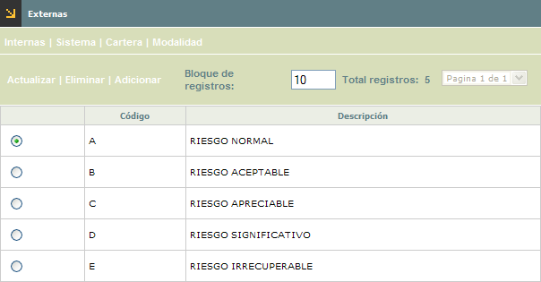
El formulario contiene las opciones Actualizar, Eliminar y Adicionar. De igual manera contiene los hipervínculos Internas, Sistema, Cartera y Modalidad que le permiten al usuario invocar los formularios desde los cuales la entidad puede parametrizar cada uno de estos tipos de calificación.
Adicionar: Si el usuario invoca la opción Adicionar se despliega un nuevo formulario
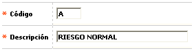
Descripción de campos
Código |
Campo alfanumérico de dos posiciones, obligatorio, en el cual se registra el número, letra o combinación de ambos que identifica a cada categoría o nivel de altura en que se clasifica la cartera. |
Descripción |
En
este campo alfanumérico de 30 posiciones, obligatorio, se ingresa
el nombre o concepto asociado a cada uno de los códigos. |
Actualizar: Si el usuario selecciona un registro e invoca la
opción Actualizar se despliega un formulario en el cual el único
campo modificable es la Descripción.
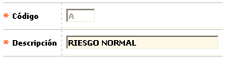
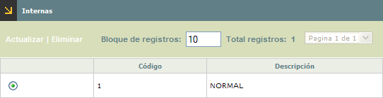
El formulario contiene las opciones Actualizar, Eliminar y Adicionar
Adicionar: Si el usuario invoca la opción Adicionar se despliega un nuevo formulario
Descripción de campos
Código |
Campo alfanumérico de dos posiciones, obligatorio, en el cual se registra el número, letra o combinación de ambos que identifica a cada categoría o nivel de altura en que se clasifica la cartera de manera genérica o estándar dentro de la entidad. |
Descripción |
En este campo alfanumérico de 30 posiciones, obligatorio, se digita el nombre o concepto asociado a cada uno de los códigos. |
Actualizar:
Si el usuario selecciona un registro e invoca la opción Actualizar
se despliega un formulario en el cual el único campo modificable
es la Descripción.
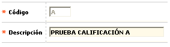
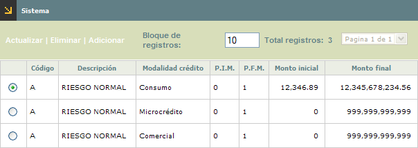
El formulario contiene las opciones Actualizar, Eliminar y Adicionar
Adicionar: Si el usuario invoca la opción Adicionar se despliega un nuevo formulario
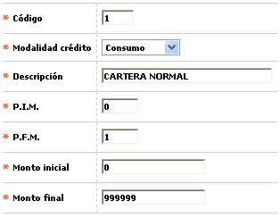
Descripción de campos
Código |
Campo alfanumérico de dos posiciones, obligatorio, en el cual se registra el número, letra o combinación de ambos que identifica a cada categoría o nivel de altura en que se clasifica la cartera. |
Descripción |
En este campo alfanumérico de 30 posiciones, obligatorio, se digita el nombre o concepto asociado a cada uno de los códigos. |
Modalidad crédito |
Campo tipo combo del cual debe seleccionarse entre Consumo, Comercial o Microcrédito, la categoría o modalidad de crédito asociada a la calificación parametrizada. |
P.I.M (periodo inicial mora) |
En este campo numérico de 4 dígitos, obligatorio, se registra el número mínimo de periodos en mora a partir de los cuales se define el nivel o categoría. |
P.F.M (periodo final mora) |
Campo numérico de 4 dígitos, obligatorio, en el que se registra el número máximo de periodos en mora hasta el cual se define el nivel o categoría. |
Monto inicial |
En este campo numérico con capacidad para cifras de hasta 14 enteros y 2 decimales, obligatorio, se registra el valor mínimo del capital en mora a partir del cual se define el nivel o categoría. |
Monto final |
Campo numérico con capacidad para cifras de hasta 14 enteros y 2 decimales, obligatorio, en el cual se registra el valor máximo del capital en mora hasta el cual se define el nivel o categoría. |
Actualizar:
Si el usuario selecciona un registro e invoca la opción Actualizar
se despliega un formulario en el cual los campos modificables son la Descripción,
PIM, PFM, Monto inicial y Monto final.
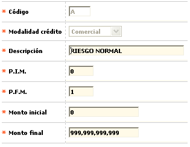
Calificaciones cartera: en este formulario se parametrizan y asocian a cada una de las diferentes alturas o categorías de madurez de la cartera, las provisiones determinadas por la legislación vigente a aplicar sobre el capital, intereses y otros conceptos. Estos parámetros aplican cuando se ha definido el manejo de provisiones por tipo de cartera, en la opción Parámetros contables.
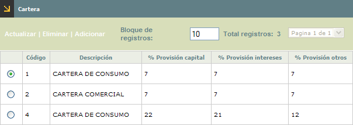
El formulario contiene las opciones Actualizar, Eliminar y Adicionar
Adicionar: Si el usuario invoca la opción Adicionar se despliega un nuevo formulario
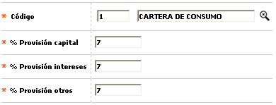
Descripción de campos
Código |
Campo con lista de valores de la cual se selecciona el Tipos de cartera, para el cual se desea definir los valores de las provisiones. |
% Provisión capital |
En este campo numérico de 3 enteros y dos decimales, en formato porcentual, obligatorio, se registra el valor porcentual a calcular sobre el saldo insoluto de capital de la obligación y que entra a hacer parte de la provisión contable. |
% Provisión intereses |
Campo numérico de 3 enteros y dos decimales, en formato porcentual, obligatorio, en el que se digita el valor porcentual a calcular sobre los intereses tanto corrientes como de mora causados sobre la obligación cuyo resultado debe hacer parte de la provisión contable. |
% Provisión otros |
En este campo numérico de 3 enteros y dos decimales, en formato porcentual, obligatorio, en el que se indica el valor porcentual a calcular sobre los no diferidos o comisiones asociados a la obligación cuyo resultado debe hacer parte de la provisión contable. |
Actualizar:
Si el usuario selecciona un registro e invoca la opción Actualizar
se despliega un formulario en el cual los campos modificables son % Provisión
capital, % Provisión intereses y % Provisión otros.
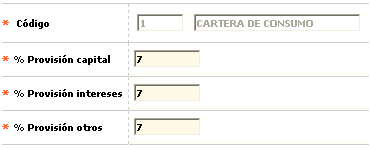
Calificaciones modalidad: en este formulario se parametriza y asocia a una de las diferentes alturas o categorías de madurez de la cartera, las provisiones determinadas por la ley para cada ítem, capital, intereses y otros conceptos. Estos parámetros aplican cuando se ha definido el manejo de provisiones por tipo de modalidad de crédito, en la opción Parámetros contables.
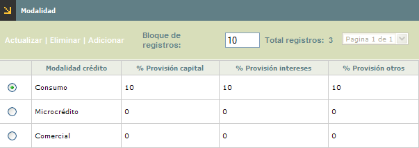
El formulario contiene las opciones Actualizar, Eliminar y Adicionar
Adicionar: Si el usuario invoca la opción Adicionar se despliega un nuevo formulario
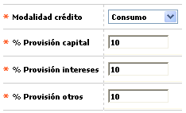
Descripción de campos
Modalidad crédito |
Campo obligatorio tipo combo del cual se selecciona entre Consumo, Mircrocrédito o Comercial el tipo de crédito para el cual se desea definir los valores de las provisiones. |
% Provisión capital |
En este campo numérico de 3 enteros y dos decimales, en formato porcentual, obligatorio, se registra el valor porcentual a calcular sobre el saldo insoluto de capital de la obligación y que entra a hacer parte de la provisión contable. |
% Provisión intereses |
Campo numérico de 3 enteros y dos decimales, en formato porcentual, obligatorio, en el que se digita el valor porcentual a calcular sobre los intereses tanto corrientes como de mora causados sobre la obligación cuyo resultado debe hacer parte de la provisión contable. |
% Provisión otros |
En este campo numérico de 3 enteros y dos decimales, en formato porcentual, obligatorio, en el que se indica el valor porcentual a calcular sobre los no diferidos o comisiones asociados a la obligación cuyo resultado debe hacer parte de la provisión contable. |
Actualizar:
Si el usuario selecciona un registro e invoca la opción Actualizar
se despliega un formulario en el cual el único campo modificable
es la Descripción.
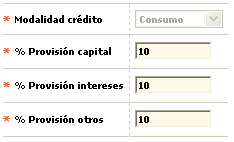